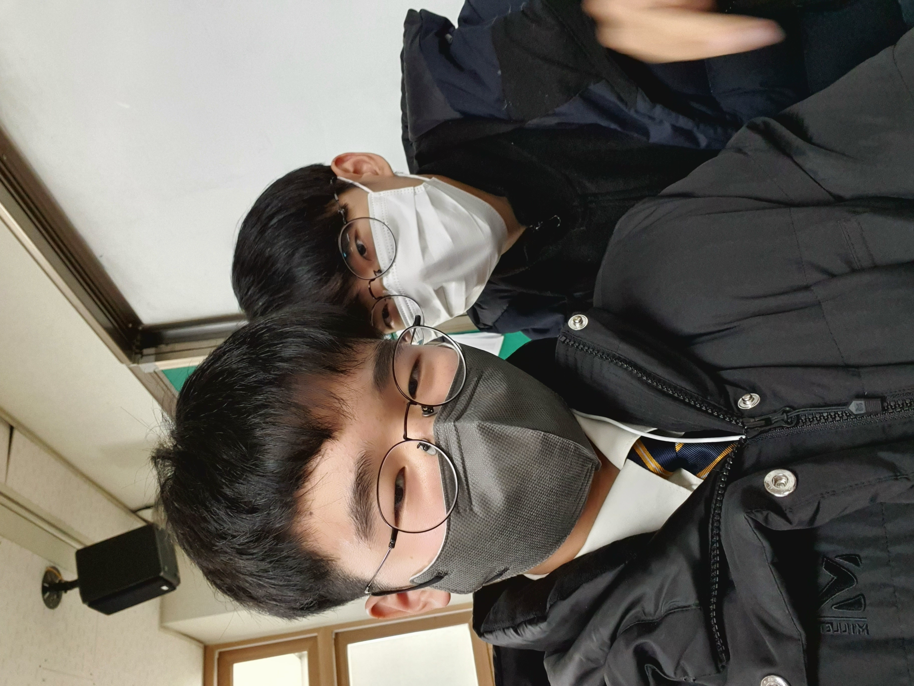

Weekly 버블리

에횽횽 나도 행복할때가있었단다.
인생은 마치 끊임없이 터지는 버블처럼, 우리에게 늘 새로운 경험을 선사한다. 이번 주도 다양한 버블을 통해 저의 생각과 경험을 공유하고자 한다.
버블리 인스타그램가기
근데 이제 비계입니다 ㅋ
게으르지만 공부는 하고싶어

게으름은 머무르는 자신을 보고 싶어 하는 마음의 표현일지도 모른다. 하지만, 내 안의 욕심은 다양한 지식을 배우고, 알아가는 즐거움을 찾아내고 싶어 한다. 공부를 통해 새로운 세상을 발견하고, 그 안에서 스스로를 재발견하는 그 과정은 지루함을 이기는 가장 좋은 방법이다.
우울하지만 행복은 하고싶어

우울함은 우리의 삶에서 빼놓을 수 없는 부분이다. 때로는 우리를 더 깊은 생각으로 이끌기도 하고, 가끔은 우리를 힘들게 만들기도 한다.
그러나 그럼에도 불구하고, 우리는 행복을 추구한다. 행복을 추구하는 것은 인간의 본성, 아니, 모든 생명체의 본성이 아닐까 생각한다.
눈치보지만 꼴리는대로 살고싶어.
피리를 불어라
<이렇게 써야 꺽쇠나옴.ㅠ>
워어어